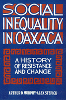

<body bgcolor="#FFFFFF" text="#000000" link="#0000FF" vlink="#CC0000" alink="#CC0000"><center><hr width="350" size="1" align="center" noshade>Two millennia of social inequality<hr width="350" size="1" align="center" noshade><p><a href="https://cdcshoppingcart.uchicago.edu/Cart/ChicagoBook.aspx?ISBN=9780877228684&&PRESS=temple" target="_top">Buy this book!</a> | <a href="https://cdcshoppingcart.uchicago.edu/Cart/Cart.aspx?PRESS=temple" target="_top">View Cart</a> | <a href="https://cdcshoppingcart.uchicago.edu/Cart/Cart.aspx?PRESS=temple" target="_top">Check Out</a></p><p></p></center><!--none//--><h1>Social Inequality in Oaxaca</h1>
<H2>A History of Resistance and Change</H2>
<h3>Arthur D. Murphy and Alex Stepick, foreword by Henry A. Selby</h3>
<P>cloth 0-87722-868-X $79.50, Dec 91, <FONT COLOR=#990033>Available</FONT>
<br>paper 0-87722-869-8 $34.95, Dec 91, <FONT COLOR=#990033>Available</FONT>
<BR> 300 pp
5&nbsp;map(s) 15&nbsp;figures
</P><BLOCKQUOTE><I>"Anthropologists Murphy and Stepick trace urbanization in the capital city of the state of Oaxaca for more than 2,000 years. Their study represents a micro perspective that describes the </I>colonias populares<I>, the poor neighborhoods, and the struggles of Oaxacans to survive and improve life in marginal communities.... The book is well organized, with excellent annotated footnotes and a reading list."</I>
<br>&#151<b><I>Choice</I></b><I></I></BLOCKQUOTE>
<p>This may be the only book that analyzes the urbanization of one area from its origins more than two thousand years ago to the present. Arthur Murphy and Alex Stepick examine Oaxaca, Mexico, where they have been doing research regularly for the last twenty years. Paying particular attention to neighborhoods, families, and economic activities, they focus on issues of poverty and inequality.
<p>Oaxaca is a city marked by socioeconomic inequality that has felt the alternating trends of integration into and isolation from the broader world. It is a city in which tens of thousands of households resolutely try to adapt, to survive and pass on something of themselves to their children. With rich ethnographic material and historical research, Murphy and Stepick describe gender roles, the dynamic nature of households, the importance of compadrazgo (co-godparenthood) as a social institution, class-based political struggles and strikes, and the role of children in redeeming their parents from poverty.
<p>Individual life histories emerge from their research, each representing diverse class, familial, and economic structures within Oaxacan society.
<BR>&nbsp;<h2>Excerpt</h2><P>Excerpt available at <a href="http://www.temple.edu/tempress">www.temple.edu/tempress</a></p>
<BR>&nbsp;<h2>Reviews</h2>
<p><i>"Murphy and Stepick catch Oaxaca at a special time in its history. When the illustrious works of theory in the academic disciplines have faded, when Foucault is a footnote and deconstruction derided, books like this one will still be valuable. A portrait of a city during the most difficult period of its country's recent economic history."</I>
<br>&#151<b>Henry A. Selby</b> (from the Foreword)
<BR>&nbsp;<h2>Contents</h2><P>
<p>Illustrations and Tables
<br>Foreword &#150 Henry A. Selby
<br>Acknowledgments
<br>Acronyms
<br>1. Introduction
<br>2. A Social History of Oaxaca
<br>3. People and Places: Oaxaca's Social Geography
<br>4. Contemporary Economics
<br>5. Community-Level Adaptation
<br>6. Family and Household: Oaxaca's Social Firmament
<br>7. Four Households
<br>8. Conclusion
<br>Notes
<br>Further Reading
<br>References
<br>Index
</P><BR>&nbsp;<H2>About the Author(s)</H2>
<P><b>Arthur D. Murphy</b> is Associate Professor of Anthropology at Georgia State University.</P>
<P><b>Alex Stepick</b> is Associate Professor of Anthropology at Florida International University.</P>
<BR><H2>Subject Categories</H2>
<p><A HREF="/tempress/anthropology.html" TARGET="_top">Anthropology</a>
<BR><A HREF="/tempress/urban.html" TARGET="_top">Urban Studies</a>
</p>
<BR><h2 class="inpageheading">In the series</H2>
<P><I><a href="http://www.temple.edu/tempress/conflicts.html" onMouseOver="window.status='Click for other books in this series!'; return true;" onMouseOut="window.status=''; return true;" target="_top">Conflicts in Urban and Regional Development</a></i>, edited by John R. Logan and Todd Swanstrom.
</p><p><i>Conflicts in Urban and Regional Development</i>, edited by John R. Logan and Todd Swanstrom, includes books on urban policy and issues of city and regional planning, accounts of the political economy of individual cities, and books that compare policies across cities and countries.</p>
<p align="center"><a href="https://cdcshoppingcart.uchicago.edu/Cart/ChicagoBook.aspx?ISBN=9780877228684&&PRESS=temple" target="_top">Buy this book!</a> | <a href="https://cdcshoppingcart.uchicago.edu/Cart/Cart.aspx?PRESS=temple" target="_top">View Cart</a> | <a href="https://cdcshoppingcart.uchicago.edu/Cart/Cart.aspx?PRESS=temple" target="_top">Check Out</a></p><p><font face="Arial" size="1"><a href="copyright.html" onMouseOver="window.status='Web Copyright Policy';return true;" onMouseOut="window.status=''" title="Web Copyright Policy">&copy;</a> 2015 <a href="http://www.temple.edu" target="new" onMouseOver="window.status='Link to Temple University home page';return true;" onMouseOut="window.status=''" title="Link to Temple University home page">Temple University</a>. All Rights Reserved. http://www.temple.edu/tempress/titles/815_reg.html</font></p>